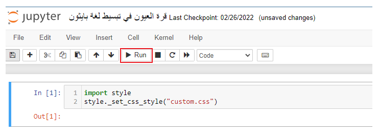

محتويات الكتاب
مقدمة الكتاب
الحمد لله الذي تتم بفضله الصالحات وأصلي وأسلم على خير البشر نبينا محمد صلى الله عليه وسلم وعلى آله وصحبه الطيبين الطاهرين. أما بعد:
فلقد لاحظت خلال فترة تعلمي للغة بايثون افتقار المكتبة العربية الى كتاب مكتمل يشرح مبادي هذه اللغة بشكل منظم وبسيط. فعقدت العزم على تأليف هذه الكتاب وذلك لما رأيته من الأهمية بمكان أن يتعلم القارئ العربي هذه اللغة والتي أصبحت اللغة البرمجية المحبوبة لدي الكثير من العلماء والباحثين والمهندسين. فمعظم جامعات العالم اليوم أصبحت تدرسها لطلابها لأنها لغة برمجية سهلة و قوية في نفس الوقت ويمكن استخدامها في مجالات عدة. لذلك أردت أن يكون هذا الكتاب لبنة أولى للمساهمة في تعليم هذه اللغة وحافزاً الى تدريسها في مدارسنا الحكومية في مراحل مبكرة كالمتوسطة والثانوية مثلاً وذلك لأن الأجيال الحالية لديها شغف غير مسبوق لكل ماهو جديد في عالم التقنية وخصوصاً الكمبيوترية منها. فكل ما يحتاجه هذا الجيل هو استخدام طريقة سهلة وشيقة تعرفهم بهذه اللغة وتعزز شغفهم بها فيصبحوا قادرين على تعلمها والاستفادة منها دون مشقة أو عناء. وبما أن هذا العمل بشري المصدر فإنه لا يصل الى درجة الكمال لذلك أرجو ممن سنحت له الفرصة لقراءة هذا الكتاب أن يساهم في تحسين محتواه بإرسال ملاحظاته الى ايميل المؤلف ahmad.alsaadi@uj.edu.sa الذي يعدكم على اخذها في عين الاعتبار متى ما سنحت الفرصة لإصدار طبعة جديدة لهذا الكتاب.
كيف تقرأ الكتاب
تم تدوين هذا الكتاب بواسطة دفتر ملاحظات جوبتر. ووقع الإختيار على استخدام دفتر ملاحظات جوبتر لعدة أسباب من أهمها:
- دفتر ملاحظات جوبتر بيئة تفاعلية يجمع بين امكانية إضافة الشروح وكتابة الأكواد البرمجية. فجوبتر يحتوي على نوعين من الخلايا. خلايا تنسيق نصوص Markdown تسمح بكتابة النصوص وإضافة الصور وخلايا كود تمسح بكتابة وتنفيذ أكواد بايثون البرمجية داخلها.
- تعلم لغات البرمجة يتطلب الكثير من التمرس على كتابة الأكواد واكتشاف الأخطاء ووجود بيئة تفاعلية مثل دفتر ملاحظات جوبتر سوف يمكن المتعلم من التعديل على الأكواد الموجودة داخل صفحات الكتاب واظهار نتائج التعديل الذي حصل للكود دون الحاجة الى إعادة كتابة الأكواد في محرر خارجي خاص كما جرت عليه العادة في كتب تعليم لغات البرمجة الورقية.
- امكانية إضافة المتعلم لملاحظاته الخاصة داخل الكتاب بشكل مباشر.
لاستخدام دفتر ملاحظات جوبتر في فتح الكتاب والتفاعل معه يجب عليك اولا تنصيبه على الجهاز الذي تعمل عليه. بعد إتمام عملية التنصيب بنجاح وتشغيل دفتر ملاحظات جوبتر سوف يتم إنشاء خادم محلي على جهاز الكمبيوتر يمكن الدخول اليه من خلال متصفح الويب والذي بدوره يمكننا من فتح ملفات الكتاب.
تنصيب دفتر ملاحظات جوبتر
تعتبر طريقة فتح الكتاب والتفاعل معه من خلال تنصيب دفتر ملاحظات جوبتر على جهاز الكمبيوتر الذي نعمل عليه هي الطريقة المثلى لاستخدام هذا الكتاب. سوف نقتصر شرحنا هنا حول كيفية تنصيب دفتر ملاحظات جوبتر على طريقتين شائعتين. اولاهما يعتمد على التنصيب المباشر لدفتر ملاحظات جوبتر من خلال منصب المكتبات pip بعد تنصيب بايثون على جهاز الكمبيوتر. اما الطريقة الثانية فتعتمد على تنصيب توزيعة Anaconda والتي تحتوي على دفتر ملاحظات جوبتر داخلها.
اولاً: تنصيب دفتر ملاحظات جوبتر باستخدام pip
لتسهيل شرح خطوات هذه الطريقة قمنا بعمل فيديو توضيحي يمكن مشاهدته من خلال الضغط على الرابط التالي:
اضغط هنا لمشاهدة الفيديوثانياً: تنصيب توزيعة Anaconda
وتعتبر طريقة تصيب توزيعة ِِAnaconda هي الطريقة الأسهل للمبتدئين متى ما أرادوا تنصيب دفتر ملاحظات جوبتر على أجهزتهم الكمبيوترية. فتوزيعة Anaconda تحتوي على مفسر بايثون ودفتر ملاحظات جوبتر والكثير من المكتبات العلمية المفيدة.
ويمكن اتباع الخطوات التالية لتنصيب توزيعة Anaconda على أنظمة التشغيل الثلاثة المشهورة (وندوز ـ ماك ـ ولينكس).
- قم بزيارة موقع Anaconda التالي:
اضغط هنا لزيارة الموقع - قم بتحميل التوزيعة المناسبة لنظام التشغيل الذي تعمل عليه على جهازك.
- قم بتشغيل الملف الذي قمت بتحميله في الخطوة 2 لبدء وإكمال عملية التنصيب على جهازك.
- بعد اكتمال عملية التنصيب قم بفتح Anaconda Navigator من خلال البحث في البرامج الموجودة على جهازك.
- بعد تشغيل Anaconda Navigator سوف تظهر لك نافذه تحتوي على عدة برامج اختر منها دفتر ملاحظات جوبتر Jupyter Notebook وقم بالضغط عليه.
- كما يمكنك اختصار الخطوة 4 و 5 بالبحث مباشرة عن jupyter notebook في البرامج الموجودة على جهازك والضغط عليه لفتحه.
- سوف يتم فتح دفتر ملاحظات جوبتر في متصفح الويب لديك ويعرض لك قائمة بالملفات والمجلدات الموجودة على جهازك.
- قم بتحميل الكتاب من موقع Github بالضغط على الرابط التالي:
اضغط هنا لتحميل الكتاب - قم بفك الضغط عن مجلد الكتاب ووضعه على سطح المكتب أو في أي مكان آخر تختاره.
- عد لدفتر ملاحظات جوبتر وابحث في قائمة المجلدات هناك عن مجلد الكتاب الذي قمت بفك الضغط عنه واضغط عليه للدخول للمجلد.
- عند الدخول لمجلد الكتاب من دفتر ملاحظات جوبتر قم بالضغط على الملف "قرة العيون في تبسيط لغة بايثون" لفتح الكتاب .
- لإظهار الكتاب بالشكل الصحيح قم باختيار أول خلية في الكتاب والضغط على زر Run من قائمة الادوات في دفتر ملاحظات جوبتر كما هو موضح في الصورة أدناه:
 - للتعرف على كيفية التفاعل مع الكتاب قم بفتح وقراءة ملف الدليل الارشادي لدفتر ملاحظات جوبتر الذي يأتي مع الكتاب.